참고한 것들
원본 논문
- 이 글은 The FastLanes Compression Layout - Decoding >100 Billion Integers per Second with Scalar Code 에서 핵심 아이디어만 요약한 글입니다.
- 별도의 명시가 없으면, 본 논문에서 그림을 가져오거나 주인장이 직접 그렸습니다.
요약정리
- FastLanes 는 architecture 에 의존적이지 않고, 빠르게 정수 데이터를 decoding 하는 layout 이다.
- 풀 논문 정리본은 여기 에 돼있고, 여기에는 로직만 실압근으로다가 정리해놓을거다.
- Motivation, evaluation 등은 저기서 확인하자.
Virtual Instruction Set
- 기존의 연구들이 다소 SIMD ISA 에 의존적이라는 문제점 아래, FastLanes 에서는 가상의 SIMD register 와 그에 맞는 instruction set 을 정의하고 구현한 다음 해당 instruction set 으로 integer decoding 을 구현해 냈다.
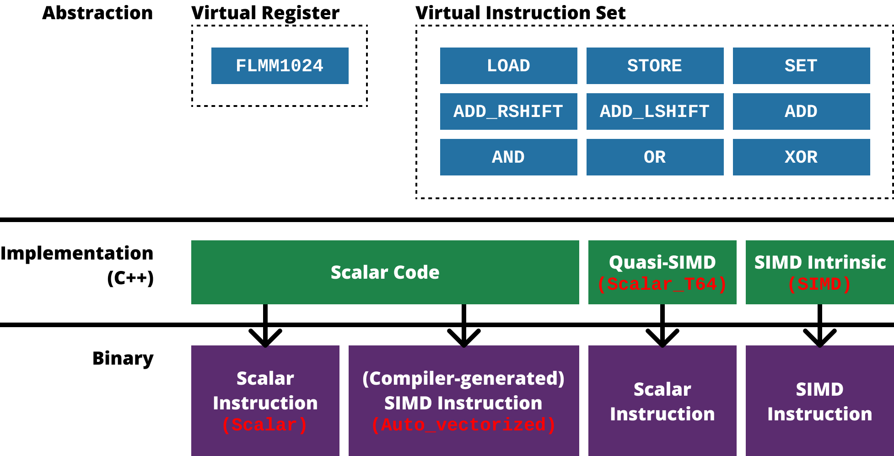
- 전체적으로 보면 위와 같다.
- 일단 virtual register & instruction set 에 관해서는,
- Virtual register
FLMM1024: SIMD 가 128, 256, 512bit 로 register size 가 두배씩 커지고 있기 때문에, FastLanes 에서는 추후에 개발될 1024bit 사이즈의 register 를 가정했다. - Virtual instruction set: 모든 SIMD architecture 에서 공통적으로 제공하고, 간단한 9개의 instruction 들을 추렸다.
- Virtual register
- 그에 대한 구현에 관해서는 다음의 4가지의 버전으로 구현했다:
Scalar: C++ Scalar code 로 구현하고 compiler 에서 SIMD optimization 을 비활성화한 버전Auto_vectorized:Scalar에서 compiler 의 SIMD optimization 을 사용한 버전Scalar_T64: C++ Scalar integer typeuint64를 SIMD 처럼 사용한 버전- 즉, SIMD 자료형이 아닌 Scalar 자료형
uint64를 사용하는데, 이것을 마치 64bit SIMD register 처럼 사용하는 것이다. - 예를 들면
uint8연산 8개를uint64연산 하나로 처리하겠다는 것.
- 즉, SIMD 자료형이 아닌 Scalar 자료형
SIMD: SIMD intrinsic 을 사용한 버전
- 이런 접근 방식에 따라,
- SIMD 를 지원하지 않는 CPU architecture 에 대해서는
Scalar혹은Scalar_T64를 사용할 수 있기 때문에 과거의 architecture 를 커버할 수 있고 - SIMD 를 지원하는 현대의 많은 CPU architecture 에 대해서는
SIMD혹은Auto_vectorized를 사용할 수 있기 때문에 현대의 architecture 가 커버되며- 이 점에 관해서는
Auto_vectorized가 C++ Scalar code 로 구현되어 있기 때문에 다른 architecture 에 대해 새로 구현하지 않아도 된다는 portability 장점을 가져가게 된다.
- 이 점에 관해서는
- 미래에 1024bit SIMD register 가 개발된다면, 이 architecture 에서 제공하는 instruction 중 virtual instruction set 과 동일한 기능의 instruction 을 사용하면 되기 때문에 미래의 architecture 에 대해서도 대응이 된다고 할 수 있다.
- 즉, 정리하면 이 virtual instruction set 의 접근방식으로 과거, 현재, 미래의 architecture 모두를 잡고 있는 셈.
- SIMD 를 지원하지 않는 CPU architecture 에 대해서는
Interleaved Bit-packing
- 위의 virtual instruction set 으로 기존의 Interleaved Bit-Packing 를 구현하여 기존의 방식에 있었던 architecture dependency 를 해결헀다.
- 즉, 기존에는 새로운 architecture 가 등장하면 그것을 이용해 insterleaved BP 를 구현하는 형식이었다면,
- FastLanes 에서는 모든 architecture 로 구현할 수 있는 virtual instruction 을 정의한 다음, 그것으로 interleaved BP 를 구현한 것.
- 위의 virtual instruction set 으로 unpack 하는 것을 알아보자.
Lane 에 Bit 들이 모두 있는 경우
- Lane 에 bit 들이 전부 들어와 있는 경우에는
MASK와AND를 한 후,SHIFT하여 값을 가져온다.
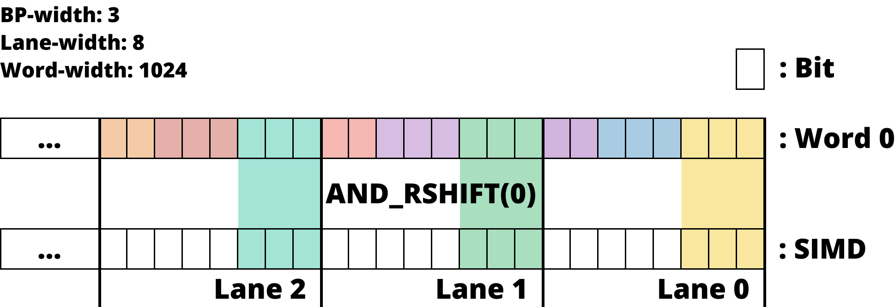
- 위 그림은 Lane 에 bit 들이 딱 붙어 있는 경우
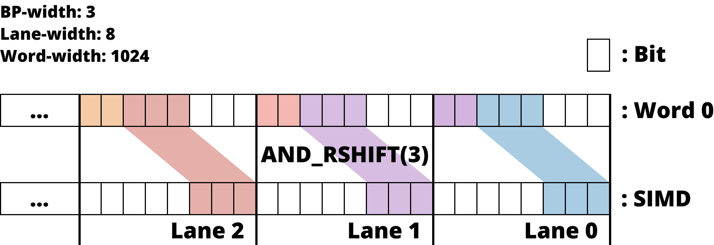
- 위 그림은 Lane 에서 좀 떨어져 있는 경우
Bit 들이 여러 word 에 뿌려져 있는 경우
- Bit 들이 여러 word 에 나뉘어져 있는 경우에는, 각각에 대해
MASK와AND한 후,SHIFT한 것을OR로 합친다.
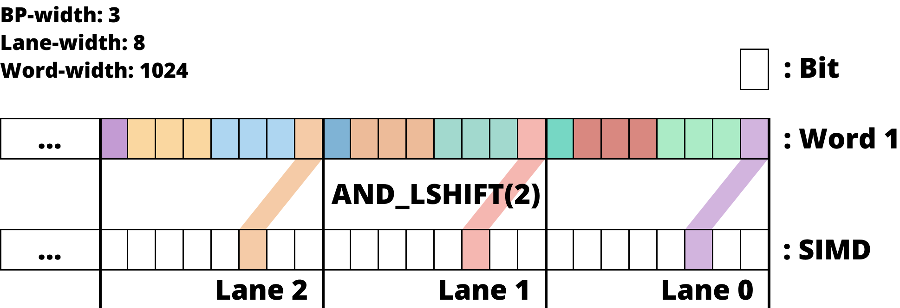
- 즉, 위 그림처럼 다음 word 에서 bit 들을 가져오고
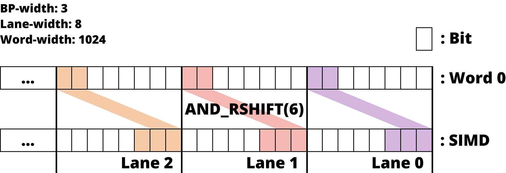
- 이전 word 에서 값을 가져온 다음 두 word 에서 가져온 것을
OR하여 합친다.
Unified Transposed Layout for DELTA Encoding
- DELTA 같은 경우에는 이전의 값에 DELTA 를 더해 이후의 값을 구하기 때문에, 연속된 데이터 간의 dependency 가 있다.
- 이것은 연속된 데이터가 인접한 SIMD lane 에 들어가게 되면 연산이 불가능해진다는 결과로 이어진다.
- 당연한 일이다. 여러 lane 의 데이터들이 한번의 instruction 으로 병렬적으로 연산되는데, 인접한 lane 의 값을 알아야 다음 lane 을 연산할 수 있다는 것은 병렬처리가 아니기 때문.
- 따라서 이 sequential data dependency 를 해결하기 위한 방법이 Transposing 이고, 그것을 모든 lane size 경우의 수를 고려하여 더욱 개선한 것이 Unified Transposed Layout 이다.
Transposing
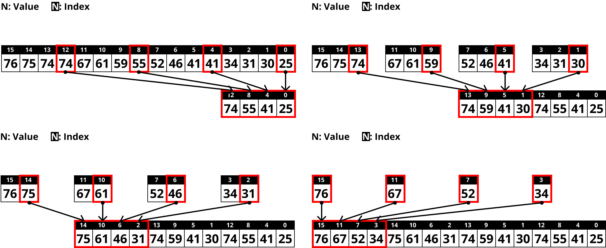
- 우선 위 그림처럼 Lane size 만큼의 간격을 두고 값을 복사해 온다.
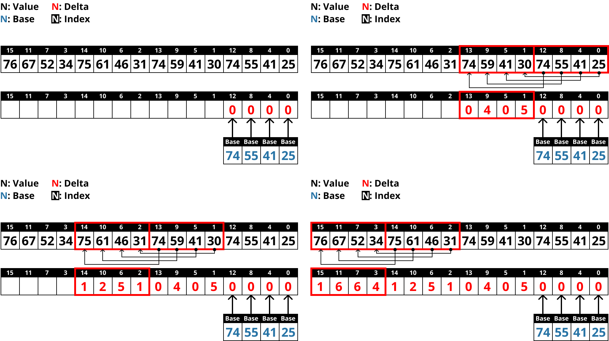
- 그리고 DELTA 를 구할 때는, 위 그림처럼 Lane size 개수의 vector 단위로 구한다.
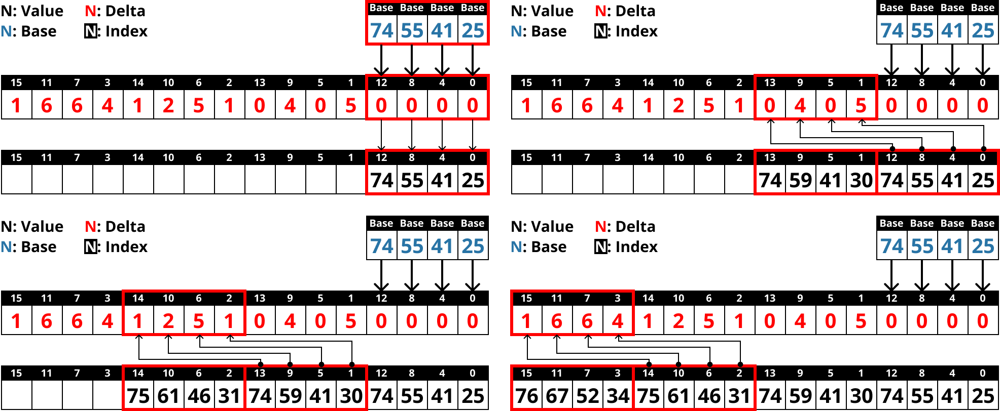
- 그럼 Decoding 할 때는 반대로 하면 되겠지?
- 위 그림처럼 Lane size 개수의 vector 단위로 DELTA vector 와 이전 vector 를 더해 현재 vector 를 구한다.
Unified Transposed Layout
- 위의 예시는 Lane size 가 4인 경우였는데, 이것을 그대로 Lane size 를 8로 늘려서 처리하면 문제가 생긴다.
- Lane size 만큼의 vector 간의 data dependency 가 있었기 때문에, vector 단위로 처리할 수 있었던 것인데
- 동일한 layout 에서 Lane size 를 늘리면 한 vector 내에 dependency 가 생기기 때문.
- 우선 그럼 Lane size 가 4인 경우와 8인 경우를 모두 커버하는 layout 을 설계해 보자.
- 다음처럼 1번 vector 와 2번 vector 의 순서를 뒤집으면 된다.
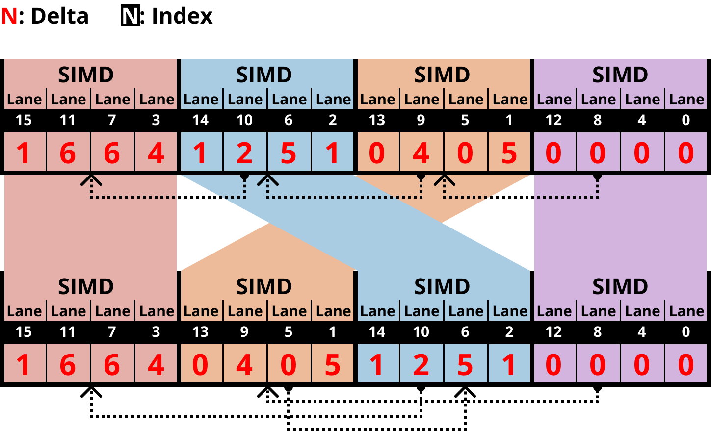
- 여기서 저 점선이 dependency 를 나타내는 것임
- 그럼 이때 Lane size 가 4일 때 정상적으로 연산되나 보자.
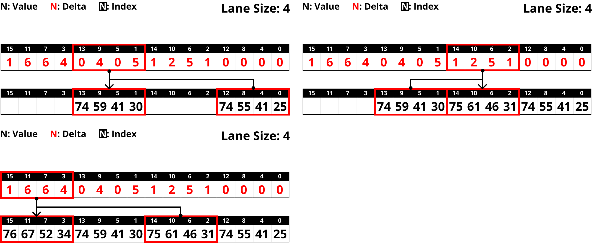
- 솔직히 이건 말로 설명하는 것보다 직접 눈으로 보는게 더 이해가 잘된다.
- 어쨋든 그래서 위 그림을 살펴보면 Lane size 가 4일 때 data dependency 가 없다는 것을 볼 수 있고,
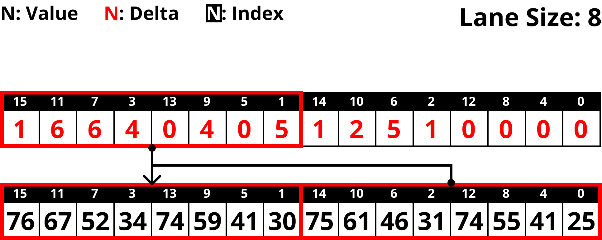
- 위 그림을 보면 8일때도 문제가 없다는 것을 알 수 있다.
- 이 원리에 따라, Lane size 가 16, 32, 64, 128 일 때를 모두 고려한 배치 순서는 “04261537” 이다.
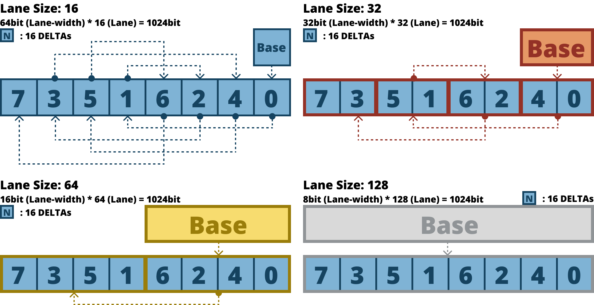
- 저 파란색 정사각형을 16개의 값이 들어있는 block 이라고 생각하고, Dependency line 을 쭉 따라가 보자.
- 그럼 문제가 없을 것이란 것을 알 수 있을 것이다.
FastLanes-RLE
- 마지막으로는 RLE 를 개선하는 방법이다.
- RLE 는 문제가 두가지 있는데,
- RLE 자체의 고질병이라고 할 수 있는 branch misprediction 이다.
- RLE 에서는 run value 를 run length 만큼 copy 해야 하기 때문에, 임의 횟수만큼의 loop 을 돌아야 하고,
- 이것은 당연히 branch misprediction 으로 이어진다.
- 둘째는 SIMD lane overwrite 이다.
- SIMD lane 은 고정된 크기이고, 이것을 이용해 가변 개수 (run length) 의 run value 를 copy 해야 하기 때문에,
- Run length 보다 더 큰 lane size 의 배수 만큼 run value 를 병렬적으로 copy 한 다음
- 다음 run 을 처리할 때는 복사한 값을 overwrite 하여 임의의 run length 를 맞춘다.
- 근데 이건 당연히 lane 을 최대로 사용하고 있는 것이 아니기 때문에 비효율적이다.
- RLE 자체의 고질병이라고 할 수 있는 branch misprediction 이다.
- 그래서 제시한 방법은 다음과 같다. 일단 아래 그림은 일반적인 RLE encoding 이다.
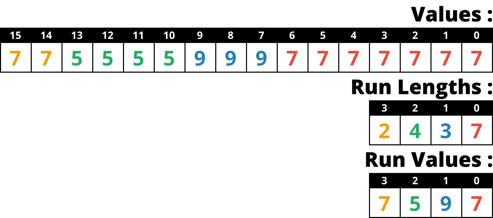
- FastLanes-RLE 에서는 Run length 대신, Run value vector 의 인덱스로 value 를 전부 치환한다.
- 즉, run value vector 를 dictionary 처럼 사용하는 것.
- 이것을 index vector 라고 부르자.
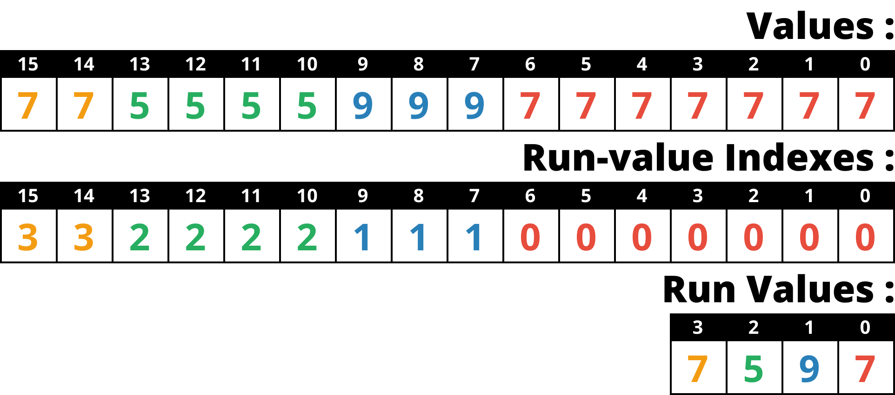
- 그리고 이것을 DELTA encoding 한다.
- 이것이 효과적인 이유는 index vector 의 값들이 index 이기 때문에 run 이 시작될 때 마다 1씩 증가하는 형상을 가지게 되고,
- 따라서 이것에 DELTA 를 하게 되면 run 이 시작될 때만 1이고 run 이 진행중일 때는 0인 형태가 된다.
- 결과적으로 값이 0과 1밖에 없기 때문에 BP 를 하면 1비트만 사용할 수 있다.
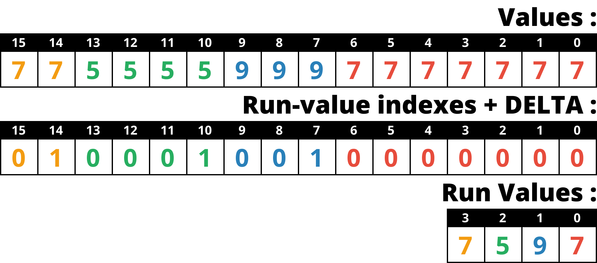
- 마지막으로 여기다가 위에서 말한 UTL 을 씌우면 병렬처리까지 완벽하게 되는 것.
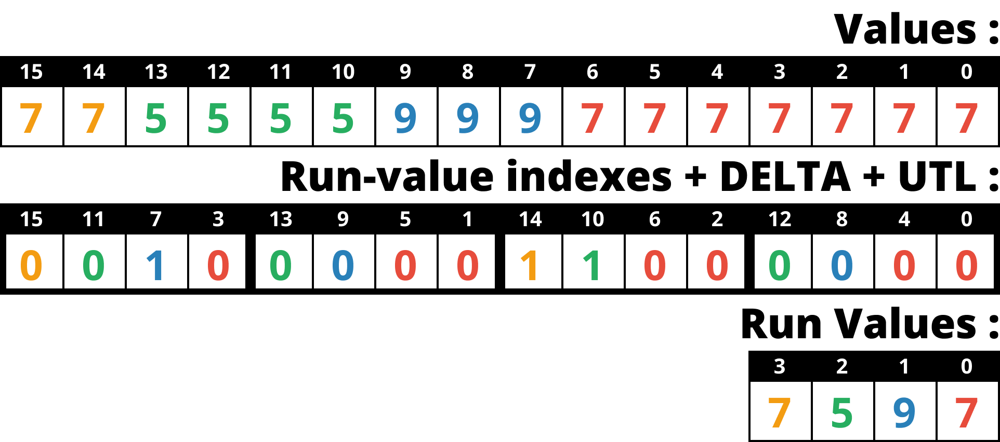
- 이렇게 하면 일단 loop 의 횟수가 고정이기 때문에 branch misprediction 이 줄어들고
- Lane 도 최대로 쓸 수 있게 된다.
- 이 Overwrite 문제에 대해서는 만약에 decoding 시에 index vector 를 원본 value vector 로 치환한다면 마찬가지로 발생하긴 한다.
- 근데 index vector 상태로 둬도 query processing 에는 아무런 문제가 없다. 그냥 query processing 할 때 대상이 되는 놈만 index 값을 value 로 바꿔서 사용하면 되기 때문.
- 이렇게 원본으로 바꾸지 않는 것은 DuckDB 같은 DBMS 에서 사용하는 방법이며, 반대의 개념을 Full (혹은 eager) decompression 이라고 한다.